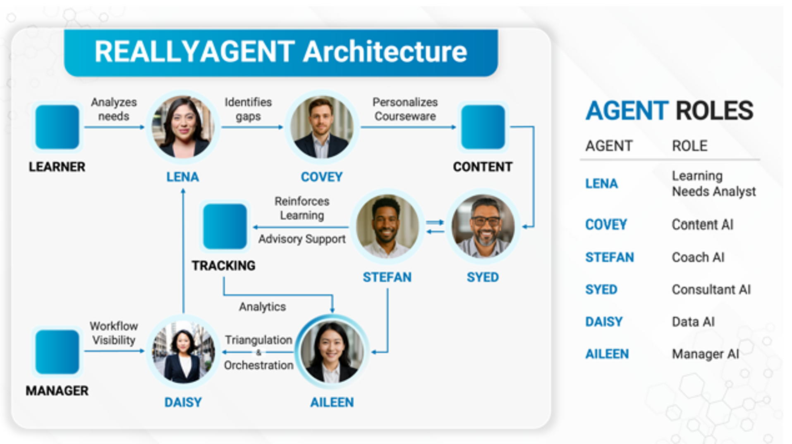

13 Dec 2024 · The Straits Times
Explore ReallyAgentsWSH — an AI-powered concept designed to make Workplace Safety and Health (WSH) learning more interactive, accessible, and engaging.
These verified reports from December 2024 highlight why awareness, continuous learning and strong safety controls matter.
These are historical news reports, not claimed to be the three most recent incidents as of October 2026.
If closing knowledge gaps helps us achieve more, why wait?
A coordinated learning experience could identify needs, select relevant content, coach learners and surface insights for managers.
Explore the six roles in your supplied architecture. Select an agent to see how its role could support WSH learning.

WSH-specific applications below are illustrative extensions of the supplied agent roles; they are not confirmed deployed features.
User-provided 19-second demonstration · Embedded locally for offline playback
AI agents can support performance analysis using video case scenarios, guiding learners through what happened, identifying possible knowledge gaps and suggesting targeted learning.
The submitted video demonstrates a learning platform interface and a machine-safety scenario. Automated video interpretation is a proposed use case, not a capability verified from this clip.
Instantly explore topic-specific feedback and learning prompts following a knowledge check or scenario.
Offer multilingual explanations to support comprehension while preserving approved safety terminology.
Connect observable decisions in a scenario with feedback and relevant safety concepts.
Capture learner progress, responses, recurring gaps and follow-up actions with appropriate governance.
A worker needs to clear a jam in a powered machine. What should happen first?
These are sample static translations. They do not demonstrate live translation or professional safety consultancy.
A proposed dashboard can make learning visible to employees, coaches and safety managers.
Illustrative dashboard numbers only; no actual user or workplace performance data is displayed.
Explore how ReallyAgentsWSH could bring relevant learning, coaching, consultancy and insights together.
Request a ReallyAgentsWSH demo →Prototype only. AI support complements—not replaces—approved WSH procedures, formal risk assessments and qualified professional oversight.